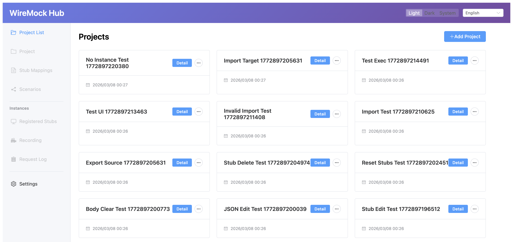
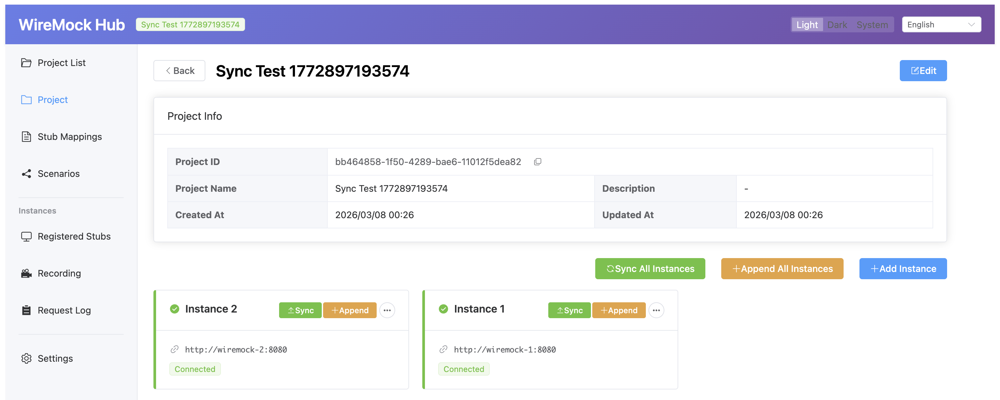
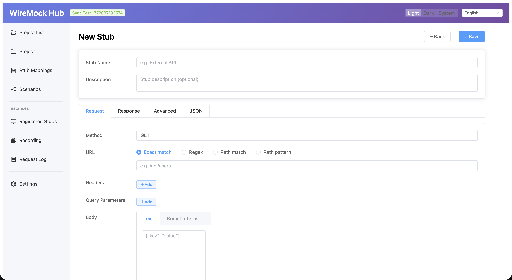
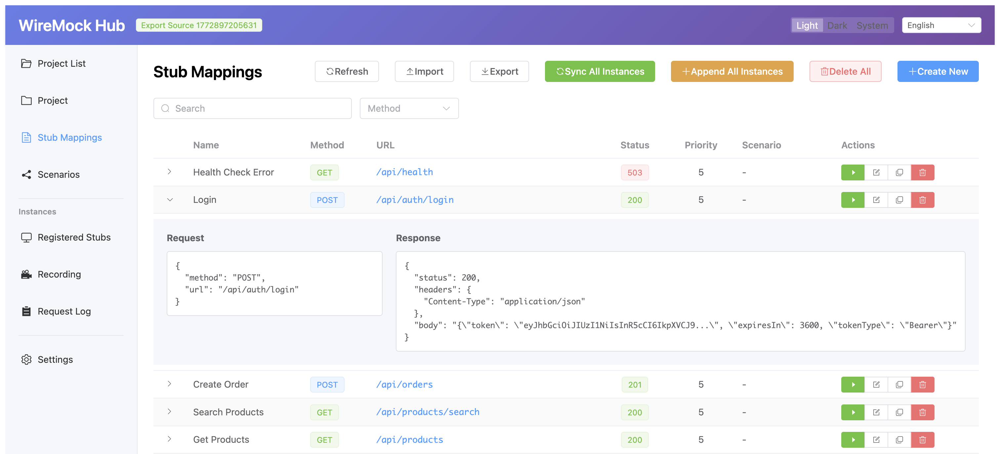
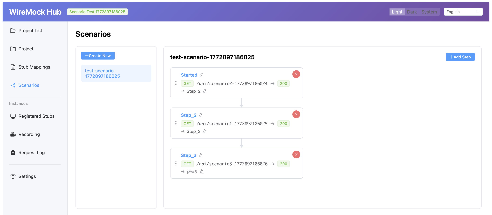
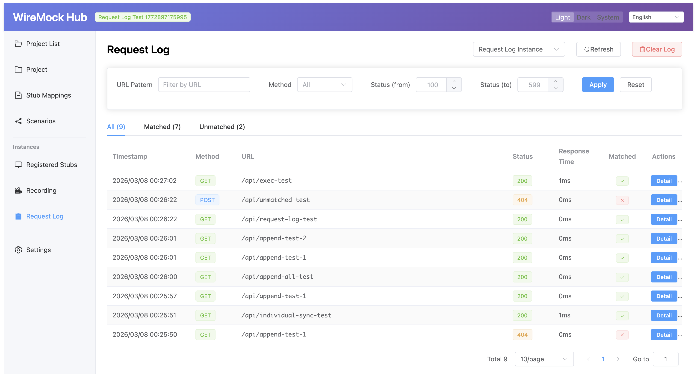

A GUI client for
centralized management of multiple WireMock instances

Create and edit stubs with a form-based UI. Deploy to all instances with a single click via Sync or Append mode.
Build stateful stub chains with a visual editor. Drag-and-drop reordering and inline state editing with automatic propagation.
Browse request logs with filtering. Start/stop proxy recording on any instance. Convert logged requests into stubs.
View stubs registered on each WireMock instance. Distinguish Hub-created stubs from external ones. Delete individual or all mappings.
Import stubs from JSON files or export for sharing. Clone existing stubs or entire projects to set up new environments quickly.
File-based SQLite persistence with no external database. Dark/Light/System themes and English/Japanese support.
| Feature | WireMock Hub | WireMock | WireMock Cloud |
|---|---|---|---|
| GUI | ✓ | ✕ | ✓ |
| Distributed Instance Sync | ✓ | ✕ | ✓ |
| Visual Scenario Editor | ✓ | ✕ | ✕ |
| Request to Stub Import | ✓ | ✕ | ✕ |
| Open Source | ✓ | ✓ | ✕ |
| Self-hosted | ✓ | ✓ | ✕ |
| No External DB Required | ✓ | ✓ | - |
Create a project and add the WireMock instances you want to manage. Projects can be created for each environment (development, staging, production, etc.). Use health checks to verify the connection status of each instance.

Define request conditions and responses for the APIs you want to mock. Configure URL patterns, HTTP methods, headers, query parameters, and body matching. Import stubs from JSON files or clone existing ones.


For stateful APIs, use the Scenario editor to build state chains visually. Reorder steps with drag-and-drop, edit state names inline with automatic propagation to adjacent steps.

Click "Sync All Instances" to deploy stubs to all WireMock instances at once. View request logs to verify mock behavior, filter by URL/method/status, and start proxy recording to capture live traffic.
